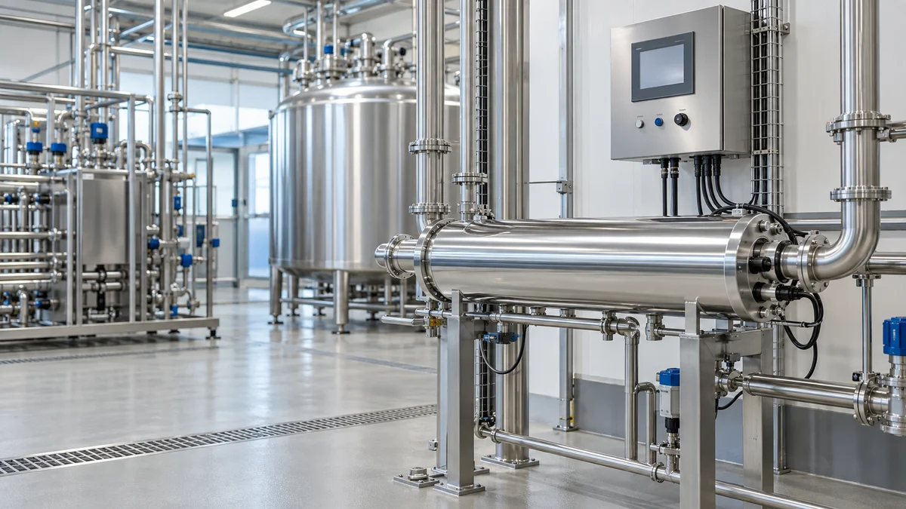
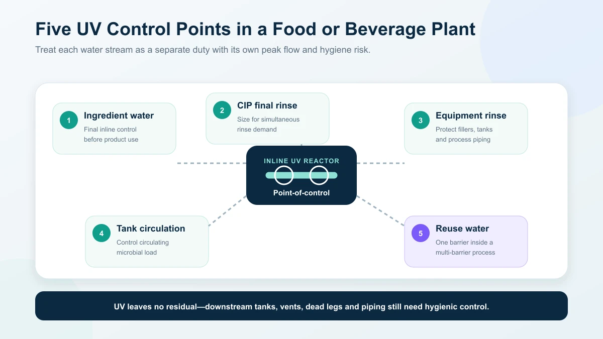
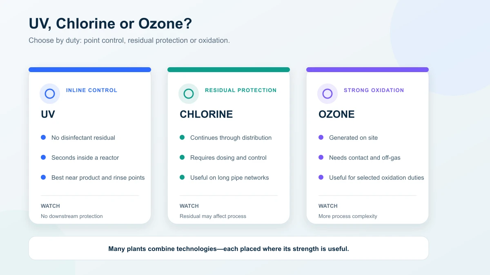

UV Water Treatment for Food and Beverage Plants: Applications, Selection and Cost
Application points, UV versus chlorine and ozone, low- versus medium-pressure selection and lifecycle cost — for food and beverage plant water
Ask an Engineering Question ↗
Where is UV used in a food or beverage plant?
Food and beverage plants use UV on water lines where microbial control is required without adding a disinfectant residual — ingredient water, CIP final rinse, equipment rinse and storage-tank circulation. UV is selected from peak flow, worst-case UVT, required performance and temperature, then supported by downstream hygiene and monitoring. KONCHE publishes up to 99.99% inactivation for selected low-pressure systems under suitable conditions. This guide maps the application points, compares UV with chlorine and ozone and shows how to request comparable quotations.
On this page
- Where is UV used in a food or beverage plant?
- Does UV disinfection work?
- UV, chlorine or ozone: which fits the duty?
- Low-pressure or medium-pressure UV?
- What water-quality data is needed?
- What should be included in a supplier quotation?
- How much does a food-plant UV system cost?
- Installation, operation and food-safety documentation
- What information should you send with an RFQ?
- Frequently asked questions
- Request a food and beverage UV proposal
Where is UV used in a food or beverage plant?
Different water streams have different risks. Treating “plant water” as one duty often leads to the wrong reactor size or location.
| Application point | Water use | UV’s role | Key buyer question |
|---|---|---|---|
| Ingredient or product water | Enters a beverage, syrup, sauce or other product | Final inline microbial-control step without adding a chemical residual | What microbiological and product-water specification applies? |
| CIP final rinse | Final rinse after the cleaning and sanitizing sequence | Reduces the risk of reintroducing microorganisms through rinse water | What is the maximum simultaneous rinse flow? |
| Equipment and piping rinse | Rinses fillers, tanks and process lines | Controls the microbial quality of the rinse-water supply | How close can the reactor be installed to the point of use? |
| Storage-tank circulation | Recirculates day-tank or holding-tank water | Helps control the circulating microbial load | Are the tank, vent, loop velocity and dead legs hygienically designed? |
| Reuse or recovery water | Supplies an approved reuse duty | Provides one microbial-control barrier in a multi-barrier process | Is the intended reuse allowed by the site and local requirements? |

UV in this guide applies to water treatment only. Surface and air UV systems use different equipment and validation methods.
Where should the reactor be installed?
Install UV after the filtration or membrane stages needed to achieve the required UVT and low suspended-solids level. Position the reactor as close as practical to the protected use point or circulation loop. Every downstream tank, dead leg and length of pipe creates an opportunity for recontamination because UV leaves no residual disinfectant.
The installation must provide:
- enough straight pipe and suitable connections for the selected reactor;
- access to remove lamps and sleeves without dismantling unrelated equipment;
- drainage and isolation for maintenance;
- flow measurement or a reliable design-flow limit;
- lamp status, run-hour and alarm connections;
- hygienic materials and surface finish where the water specification requires them.
For CIP systems, confirm whether rinse cycles can overlap. A reactor sized for one skid may be undersized when two skids enter final rinse at the same time. Either size for the simultaneous peak or control the production schedule so the design flow is never exceeded.
Does UV disinfection work?
UV-C damages microbial DNA and RNA so organisms cannot replicate. The correct engineering term is microbial inactivation, not absolute sterilization of the entire water system.
Performance depends on four conditions:
- the reactor has been selected for the required flow and target performance;
- the water has sufficient UVT and low enough particle loading;
- lamps and sleeves remain within their operating and maintenance limits;
- the reactor operates within the conditions used for its performance claim.
KONCHE publishes up to 99.99% inactivation for selected low-pressure systems under suitable conditions. A buyer should not treat that figure as universal. Ask which organism, UV dose, UVT, flow and lamp condition support the claim, and how performance will be verified at the site.
Particles, turbidity and deposits can shield microorganisms or absorb light. UV therefore follows suitable pretreatment; it does not replace it. Post-commissioning microbial testing and operating-data review are needed to confirm that the installed system meets the plant’s water specification.
UV, chlorine or ozone: which fits the duty?
These technologies are often complementary rather than interchangeable.
| Comparison | UV | Chlorine or another residual disinfectant | Ozone |
|---|---|---|---|
| Main action | Inline microbial inactivation | Disinfection plus residual protection | Strong oxidation and disinfection |
| Chemical residual | None from the UV process | Yes; concentration must be controlled | Decomposes, but contact and off-gas must be managed |
| Contact system | Compact inline reactor | Dosing, mixing and contact time | Generator, gas transfer, contact and off-gas treatment |
| Best fit | Product-adjacent water, final rinse and circulation points where residual is undesirable | Distribution systems where continuing protection is required | Selected oxidation, bottled-water or high-demand treatment duties |
| Main limitation | No downstream residual; depends on UVT and lamp condition | Chemical handling and potential effect on product or process | Higher process complexity and material-compatibility requirements |

Choose UV where a disinfectant residual is undesirable and the water can be kept within the reactor’s UVT and flow envelope. Choose or retain a residual disinfectant where long distribution lines need continuing protection. Many plants use both at different points.
Low-pressure or medium-pressure UV?
Lamp pressure is not decided by flow alone. The supplier should consider flow, UVT, target dose, temperature, footprint, lamp count, energy use, turndown and maintenance access.
| Selection factor | Low-pressure (LP) UV | Medium-pressure (MP) UV |
|---|---|---|
| Output | Concentrated around 254 nm | Broad spectrum, typically 200–400 nm |
| Power class | Commonly tens to hundreds of watts per lamp | Commonly kilowatts per lamp |
| Strength | High electrical efficiency for many routine duties | High output from fewer lamps and compact footprint at larger duties |
| Typical fit | Ingredient lines, rinse water and small-to-medium circulation loops | Large flows, limited space, variable-temperature or demanding duties |
| Trade-off | Lamp count increases as duty grows | Higher power and more demanding lamp/cooling arrangements |
KONCHE’s low-pressure UV sterilizer and medium-pressure UV system pages provide current product ranges. Published capacities are selection references only; final capacity depends on UVT, target performance and reactor configuration.
What water-quality data is needed?
At minimum, provide:
- UVT at the relevant wavelength, preferably at the worst seasonal condition;
- turbidity and suspended solids;
- iron, manganese, hardness, alkalinity and pH, which affect sleeve fouling;
- water temperature range;
- normal and peak flow;
- microbial target or water-quality specification;
- upstream treatment and downstream storage details.
EPA UV guidance emphasizes that lamp aging, sleeve fouling and sensor-window fouling can reduce long-term delivered dose. These effects should be included in design and monitored during operation—not discovered after a microbiological excursion.
What should be included in a supplier quotation?
| Comparison item | What the proposal should state |
|---|---|
| Design flow | Normal, peak and any simultaneous CIP demand |
| Water basis | UVT, turbidity, temperature and fouling-related chemistry |
| Performance basis | Target organism or specification, required dose and end-of-lamp-life assumptions |
| Reactor | Lamp type and count, chamber material, pressure rating and connections |
| Monitoring | UV intensity or validated operating parameter, flow, lamp status, hours and alarms |
| Controls | Response to high flow, low intensity, lamp failure and overheating |
| Installation scope | Valves, bypass, panel, cabling, supports, commissioning and sampling |
| Acceptance test | Operating checks and microbiological verification at defined sampling points |
| Consumables | Lamp, sleeve, seal and sensor part numbers, price and lead time |
| Service | Training, warranty, technical response and local support arrangements |
A proposal that lists only flow and lamp wattage is not enough to compare performance or lifecycle cost.
How much does a food-plant UV system cost?
Exact prices depend on the selected reactor, materials, controls and site work. Compare the complete lifecycle cost:
LP systems usually offer lower energy use for suitable small and medium duties. MP systems use more power but may reduce lamp count and footprint at larger duties. The least expensive purchase is not necessarily the lowest-cost solution if it cannot meet the required performance at peak flow and end of lamp life.
Ask suppliers to provide:
- connected and typical operating power;
- expected lamp life under the proposed duty;
- lamp and sleeve replacement prices;
- recommended cleaning and inspection frequency;
- critical-spares list and delivery time;
- expected downtime for routine service.
KONCHE’s UV disinfection consumables page lists the main replacement categories.
Installation, operation and food-safety documentation
UV supports the plant’s water and hygiene program; it does not replace local food-safety obligations, HACCP controls, sanitation procedures or customer-audit requirements.
A practical operating program should include:
- approved design conditions and alarm limits;
- run-hour, intensity and flow records;
- routine sleeve inspection based on actual fouling;
- lamp replacement based on rated life and monitored output;
- microbiological sampling at defined upstream and downstream points;
- documented response to low intensity, excessive flow or lamp failure;
- controlled bypass use;
- spare lamps, sleeves and seals matched to the installed model.
Do not use visible lamp glow as proof of performance. Lamp output falls with age, and a fouled sleeve can reduce delivered UV even when the lamp is operating.
What information should you send with an RFQ?
Send every supplier the same data package:
- application point and intended water use;
- normal and maximum instantaneous flow;
- UVT and full water analysis at the worst expected condition;
- water-temperature range and operating pressure;
- target microorganism, dose or water-quality specification;
- upstream treatment and downstream tank/loop arrangement;
- pipe size, installation orientation, electrical supply and available space;
- monitoring, documentation and acceptance-test requirements;
- required materials, surface finish and sanitary connections;
- project location and commissioning schedule.
With these inputs, a supplier can select the reactor and state the conditions behind its performance guarantee.
Can UV replace CIP or chemical sanitation?
No. UV controls microorganisms in water passing through the reactor. It does not remove product soil, clean equipment surfaces or sanitize dead legs. It is one part of the plant hygiene program.
Can UV replace chlorine throughout the plant?
Not automatically. UV leaves no residual, so it is well suited to product-adjacent control points. Long distribution systems may still need a residual disinfectant or another strategy to control regrowth.
How do I know whether the system is large enough?
The proposal should show that the reactor meets the required performance at peak flow, worst-case UVT and end-of-lamp-life conditions. Flow, UV intensity and alarms should then keep operation inside that design envelope.
How often should lamps and sleeves be serviced?
Follow the installed lamp’s rated life and the observed intensity and fouling trend. Fixed intervals are useful for planning, but actual water chemistry, operating hours, starts and temperature affect service requirements.
Request a food and beverage UV proposal
Send the application point, peak flow, UVT or water report, temperature, required performance and installation details. KONCHE can then compare LP and MP configurations and define the monitoring and service package: request a quotation.
Technical note: Product performance and service intervals depend on the stated water quality and operating conditions. Food producers must confirm the standards and regulatory requirements applicable to their market, product and site.
Recommended systems for this application
Systems commonly specified for the duties discussed in this guide:
254 nm low-pressure UV for ingredient, rinse and circulation duties, 0.25–50 m³/h.
View specifications ↗MEDIUM-PRESSURE UVMedium-Pressure UV SystemHigh-output MP UV for larger flows and demanding water, up to 500 m³/h.
View specifications ↗UV CONSUMABLESUV Disinfection ConsumablesReplacement lamps, quartz sleeves, sensors and seals matched by reactor model.
View specifications ↗Size the duty,
not the nameplate.
Send the application point, peak rinse and process flows, UVT or water report and required performance. KONCHE will compare LP and MP configurations and define the monitoring and service package behind them.